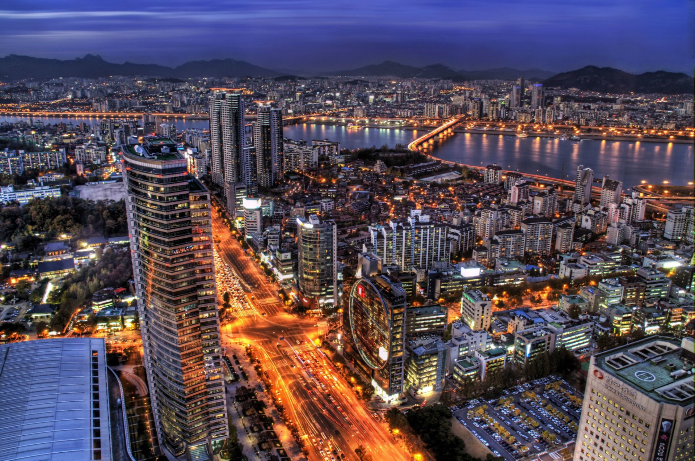
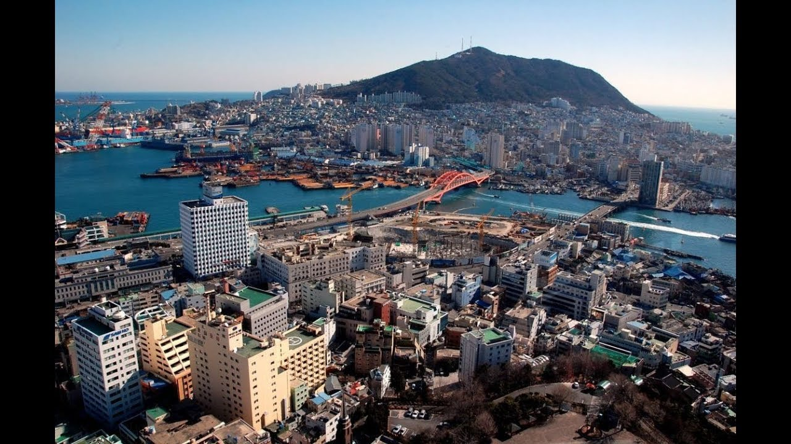
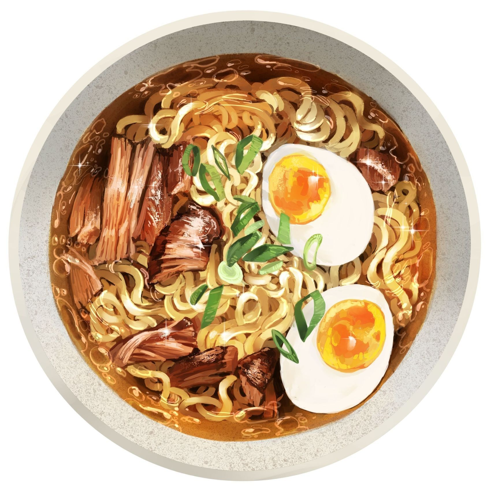

Cities
Un viaggio in Corea del Sud concede al visitatore occidentale la possibilità unica di immergersi in un luogo in cui la modernità e l’innovazione più estrema si affiancano integrandosi, con armonia e buon senso, a tradizioni millenarie. Le tradizionali dicotomie che vedono il moderno contrapporsi all’antico, l’occidentale all’orientale, in Corea del Sud si fondono e trovano in uno dei Paesi più densamente popolati al mondo un’integrazione capace di suscitare meraviglia e stupore.
Le città ne costituiscono il centro pulsante, prima fra tutte la sua capitale, la cui visita non può prescindere da un viaggio in Corea del Sud. Seul è l’anima del Paese, nel senso più stretto del termine visto che il suo nome si pronuncia “soul”, che in inglese significa appunto “anima”. Il modo migliore per avere un colpo d’occhio spettacolare sulla città è visitare | il monte Namsam | sulla cui sommità svetta la Seul Tower, alta 237 metri.
|  |
Situata nel nord-ovest del Paese, poco più a sud della zona demilitarizzata coreana, sul fiume Han, la città è il centro politico, culturale, sociale ed economico più importante dello Stato. Sede delle multinazionali che operano nel Paese, come capitale della Corea del Sud rappresenta una delle più forti economie mondiali ed è il simbolo visibile di quello che viene chiamato il "miracolo del fiume Han", riferito agli enormi progressi nel campo dell'economia sudcoreana negli ultimi decenni. |
 |
Busan, una grande città portuale della Corea del Sud, è conosciuta per le spiagge, le montagne e i templi. Intorno all'affollata spiaggia di Haeundae si trovano il Sea Life Aquarium e un'area dedicata ai giochi tradizionali come il tiro alla fune, mentre la spiaggia di Gwangalli offre numerosi bar e una vista sul ponte di Diamante. Il tempio buddista di Beomeosa fu fondato nel 678 d.C. e sorge alle pendici del monte Geumjeong, attraversato da sentieri escursionistici. |
|  |
Jeju Island è un’isola incredibile: col suo susseguirsi di boschi e di vulcani, di faraglioni e di musei, è un piccolo paradiso affacciato sul Mar Giallo. Ed è la meta turistica più amata dai sudcoreani, soprattutto dalle coppie in viaggio di nozze. Collegata tramite voli quotidiani alle maggiori città d’Oriente (Tokyo, Osaka, Pechino, Shanghai) e ai principali aeroporti della Corea del Sud, è capace di conquistare anche i visitatori europei col suo splendido panorama. |

| 
|